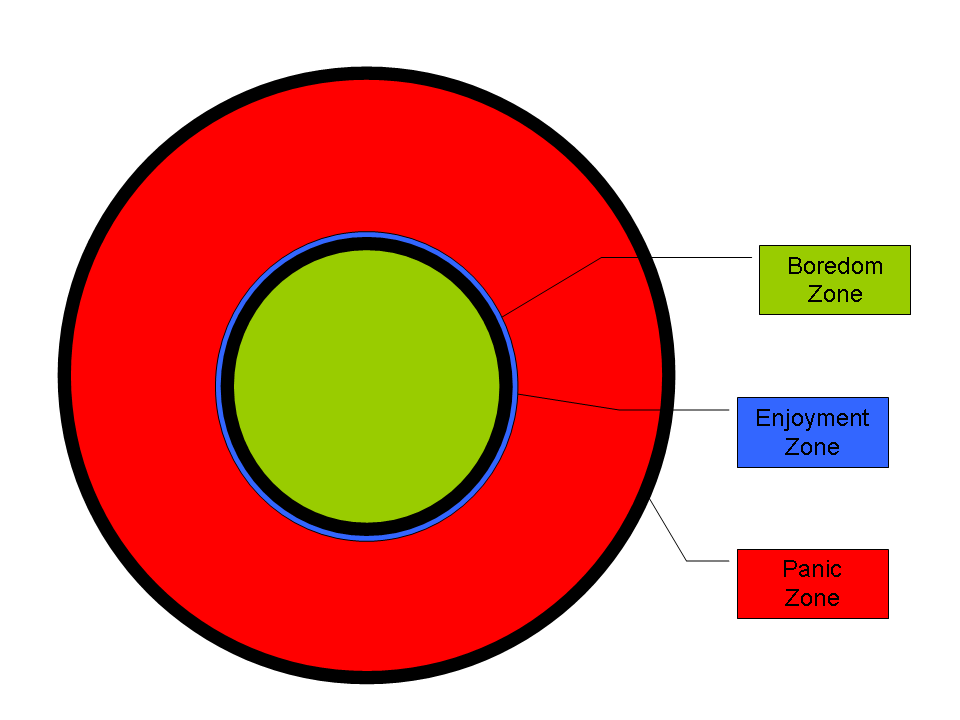
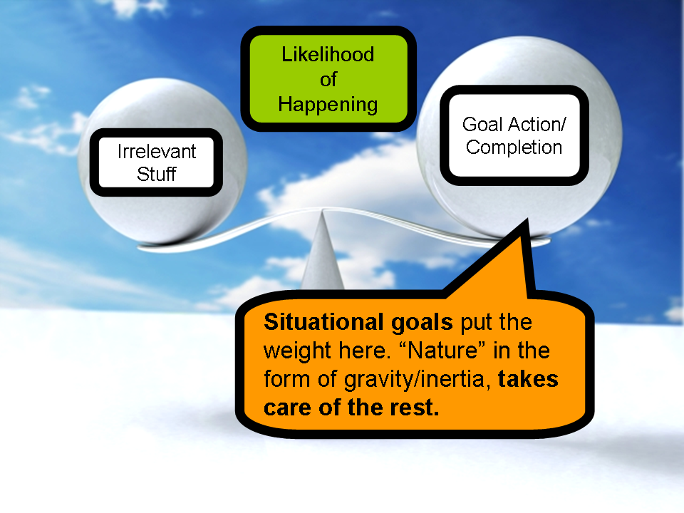

In “the literature” (a lot of it very good literature, like Talent Is Overrated and The Talent Code), it’s often said that, you know, we need to do “deliberate practice”, meaning stuff that’s actually a little hard and painful for us. Through deliberate practice, we grow. The reason pros get good and amateurs don’t is because they don’t do enough of this deliberate practice.
Apparently, the amateurs stay in their “comfort zone”, doing easy things, and so never grow. The pros, meanwhile, “stretch themselves”, by working effortfully in their “growth zone”; leaving their comfort zone makes them stronger, faster, longer, thicker and harder.
Um…How do I put this politely…
Bollocks.
OK, “bollocks” is a strong word. It’s just, the thing is that these ideas are well and good in principle, but in practice they only hurt people. In practice, they will not get anyone to independently do what they need to do to reach pwnage. In practice, they boil down to a re-affirmation of a pattern of behavior that I rather prejudicially like to call ASM: “Anglo-Saxon Masochism” (here we go again) — what many often call the “Protestant/Calvinist work ethic”: no pain, no gain, bee arch; suffering breeds character, mofo.
Unfortunately, in the absence of violence, fear and/or coercion (preferably all three), these ideas aren’t going to help anyone.
Don’t get me wrong: if you have someone there in your life who’s constantly ready and willing to beat, scare or otherwise force you into working, then ASM will be effective. Very effective a few people may die or suffer nervous breakdowns, but we usually just call that “natural selection”. Many of the very best-regarded sports teams, schools and military organizations use it all the time.
But I can’t work like that — not independently. And I know you can’t, either. And I don’t want to live with fear, violence and coercion. Indeed, as soon as the apparatus of violence/fear/coercion is removed, many (former) sportsmen and soldiers become, well, fat people with lots of funny stories to tell about the good old days. And many former students become, well, fat people who used to know calculus.
We who speak English natively — and are therefore participating in the same wider society — have probably had some degree of ASM culturally ingrained in us; we’ve been indoctrinated pretty well. That’s why you and I have had so much trouble doing things you otherwise want to do — like acquire some form of knowledge or skill, or produce some kind of product or performance.
OK, let’s review. Simplistic cultural generalizations aside, here’s the deal:
- Because of our training, our default pattern is to use fear, coercion and violence on ourselves.
- The idea of comfort zone, growth zone and panic zone is probably accurate.
- But, because of (1), too many of us think our panic zone is our growth zone. Put another way, we suck at measuring the distance between the comfort zone and the growth zone. In fact, it turns outs that the comfort zone and the growth zone are incredibly close together. What you think is your comfort zone is probably your growth zone; sustainable “deliberate practice” is much easier and much more enjoyable than most people are currently led to believe. Yes, as simple as a cloze deletion or a sentence recognition card is, you are actually learning. In fact, just for kicks I would like to rename the zones, as follows:
- Comfort Zone → Boredom Zone
- Growth Zone → Enjoyment Zone (aka The True Comfort Zone)
- Panic Zone → Panic Zone (aka Pain Zone)

I don’t like this “no pain, no gain” crap. And we don’t need it. Comfort and growth are not mutually exclusive. Discomfort and growth are not the same thing — if they were, people with ill-fitting shoes would be the happiest, most successful, most productive in the world 😉 . Growth feels good. Or, at least, it can. Amateurs don’t fail to get good because they stay in their “comfort” zone, they fail to get good because either:
- They stay in their “boredom” zone, and this leads them to put in less time, or
- They never feel right about spending more time on the activity because it’s so much fun — I have friends who could be professional writers who actively choose to avoid writing because “it’s fun”, or
- Constant reboiling and three-day monking. They do eventually put in enough time, but it’s dissipated over far too many years to reach “critical mass“. All human skill is depends on memory in some form. Think of this memory as, to mix metaphors, a puddle of radioactive material. We need to add to this puddle faster than decay or evaporation can do away with it.
Anyway…
So, how do we get to that true comfort = enjoyment = growth zone? How do we get so that we’re consistently doing something? I’d give you a complicated formula, but neither you nor I would remember it, and what good is a good idea that you can’t keep in your head, ready to use, right? So here is what I do:
Set appearance/situational/environmental goals rather than action/completion goals. Rather than setting a goal to do the right thing, set a goal to be in the right place. Set a goal to show up. No more. NO MORE. Don’t get clever. Don’t try to achieve. As soon as you start getting clever and adding stuff, your body will rebel.
You don’t have to run tomorrow morning. You just have to have your shoes on and be standing outside. You don’t have to eat healthy food, you just have to have (only) healthy food in your house. Once you’ve fulfilled the situational goal, you can go back inside to eat potato chips (oh, wait…none in the house — better run to the grocery store to get some) and watch Robot Chicken (oh wait, I only have Japanese versions…) if you want.

You may think just “being there”, standing outside with your shoes on, doesn’t do anything, and doesn’t achieve anything. And you’re right. But you’re also wrong. Because by being there you have done some incredibly profound scale-tipping — you have made it easier to do something, than to not do it. You have turned an uphill mountain hike into a playful, downward slide. You are now working with gravity, instead of against it.
This is how and why I “executed” and continue to execute my Japanese project so well. I never set a goal to even listen to a specific number of hours of Japanese. That’s far too mendokusai. Count? Are you joking? This isn’t effing Sesame Street. I simply set a goal to be in a position/location such that there was Japanese entering my eyes and ears. My goal was to either be in a room where Japanese sounds could be heard, or to have my headphones on and Japanese playing in them (my music player only had Japanese things on it, so this was cake).
This is also why it was actually easier for me to go “all Japanese” than “some Japanese” — “all Japanese” requires no management overhead whatsoever. The only “management” I did and do was shopping for more Japanese stuff. And we all love getting new stuff 😉 .
Can you see the difference?
Situational/environmental goals are actually very powerful. And people already recognize their negative power; they just don’t realize that they also have positive power. Do you know why your parents didn’t let you hang out with the bad kids? Not because you were actively going to do bad stuff, but because simply being with the bad kids was enough such that the situation would almost inevitably take itself in a bad direction, with or without your intervention and good intentions.
Don’t work to achieve something. Let the environment do the work for you.
Don’t do the right thing. Just be in the right place.
Don’t change yourself. Just change your surroundings. Your surroundings will then change you — always.
OK, let’s hit out some more examples:
- 🙁 Bad goal: Do/finish something.
- 😀 Good goal: Be where things (really) get done.
- 🙁 Bad goal: Listen to Japanese.
- 😀 Good goal: Have (only) Japanese to listen to.
- 🙁 Bad (action) goal: Read Japanese.
- 😀 Good (situational) goal: Have (only) Japanese books to read. Every-freaking-where — bag, bookshelf, bedroom, bathroom, car.
- 🙁 Bad (action) goal: Do SRS reps.
- 😀 Good (situational) goal: Have (only) SRS window open.
- 🙁 Bad (action) goal: Go somewhere.
- 😀 Good (situational) goal: Be in car. Be outside with shoes on.
- 🙁 Bad (action) goal: Write book.
- 😀 Good (situational) goal: Be at desk with writing tools.
In short, set up the right system (this does require some effort, but very little — we have a lot of economic/technological infrastructure that makes this very easy for us), and then let the system’s inertia carry you all the way to your goal. The other cool thing is that you get you get an instant “win”, you don’t have to wait to get something “right” or “finished”, to feel good.
There are no guarantees in terms of quantity and speed, but “little and often” is more than good enough in most situations. As I always say: no project ever dies of malnutrition, only of complete-and-absolute starvation. Most things fall through not because someone was doing too little, but because he wasn’t doing anything at all. Most people don’t fail at scheduling because of being bad at scheduling, but because they never even look at the schedules they so lovingly made.
Each of us is like a river. We want to take the proverbial path of least resistance. Trying to use our willpower all the time — trying to “do” and “finish” things — is like trying to get the cooperation of every molecule in the river at every turn: tiring. By changing our environment, we basically tweak the path in small, simple but significant ways. And then we can go back to being our lazy selves for the remaining ~99% of the time, sliding down a path that we have altered to lead us right where we want to go.
Be your river-like self. Don’t climb up to Japanese. Slide down into it. Don’t know how? Think something up, try something out. That 1300 grams of meat inside your skull isn’t for decoration and it isn’t for slogging; it’s there for making your life simpler, easier and happier 😉 .
If you identify and take care of the preconditions, then goal achievement can happen as a side-effect, as an afterthought — as if you weren’t even trying (and, in truth, you won’t be).
Anyway, that’s my two cents. You guys always give great feedback, so I’m excited to hear your stories and advice 🙂 .
Yeah, I’ve had a problem lately. I’ve been “actively” trying the AJATT method for about 10 months (OK, honestly, I started studying daily 10 months ago, AJATT more like March time, but it’s just been growing since).
My problem is I live in Japan and have a Japanese fiance. Yet for the life of me I just cannot output much. I understand a lot (mind you not 100%) and I know I just need to listen, listen, listen. But I figure I should at least be outputting something other than simple phrases. My vocabulary and kanji knowledge is astounding I can say. My reading is my strongest aspect. I also read a lot of stuff. Listening is still fairly weak I suppose, although I pick up 40 percent of a conversation I’d say.
This helps me realize I just need patience, and it will come eventually. Thanks 🙂
Ok, I have somewhat of a dilemma/question/whatever you want to call it. I’m an advanced mandarin learner (I’m the Chinese TA at my university) but ever since learning about this site I have been slowly going into the AJATT (or I should say A Mandarin ATT) learning “道” with online Chinese comics, Anki as my SRS, etc.
But the one main problem I have, is that I HATE Chinese popular music!
I’m an “indie” guy, as in I listen to very non-mainstream music (like Animal Collective) or brilliant singer song writer stuff (like Sufjan Stevens) or whatever is creative genius, hence I ignore pop dribble of all kind, including Asian pop.
I know of one Chinese indie band that is decent (寂寞夏日) but other than that one, I don’t know of anything in China or Taiwan that captures the brilliance of the American indie scene.
I still listen to a ton of Mandarin, though, I listen to tons of news,lifestyle, 成語, etc. podcasts each day, and I also find advanced Chinesepod worth listening (it’s kinda fun for me, good sign!)
Anyways, does anyone no of creative, artistic, fascinating, avant-garde, freakin’ GOOD Chinese bands/singers?
On the situational goal thing:
This is easy to do 🙂
Three things I’ve done to make it ‘easier’ to SRS reps for the kanji:
* Anki is on the start-up program list of the computer.
* RevTK is now my homepage.
* The biggest time-hog I have on the computer is Supreme Commander (video game). I’ve taken the shortcut off the desktop, and hidden the folder in Program Files, so it’s a real pain to try to get to to go on. It’s far easier to deal with the SRS window that pops up first 🙂
Of course, point #3 will be fixed when I get the Japanese version of Oblivion…
@Eric: Check www.rockinchina.com
Very, very good article. The best in the last few months, maybe.
The metaphor I like best for these concepts (as a physicist) is:
– Kinematics: what should matter to you is the derivative (=progress), not the present value (=level of advancement)
– Dynamics: to increase the derivative, you need acceleration, which is provided by a force (=it could be many things, like willpower or in this case khatz’s gravity, exploited through the creation of a favorable/downhill environment). Also, since some friction (=lazyness?) exists, the force is needed even to just maintain a constant derivative.
@Santiago
Thanks dude! I’ll dig in and explore!
thanks khatz, that article pretty much opened my eyes. i need to change my environment instead.
regarding indie bands, i also have similar tastes with erick. are there any forums or sites that cover japanese indie bands instead?
I have Anki as a start-up program also. It’s not hard to go into the Window’s task scheduler and set Anki to fire up at 6 AM or something. Same goes for iTunes, which is full of Japanese music, podcasts, etc. It fires up on start-up, and I just pick a playlist and hit the play button. In fact, I dread turning it off, that’s too much extra work. ^^
I have two Kanji posters that sit right in front of me on the wall (a bed’s length away). I have Anki on my iPod Touch, which makes it all too easy to pull out paper and a pencil and write some Kanji (do reviews) while the teacher at school is talking about Space-Time, Special Relativity, and Thought Experiments.
My bookmark bar in Firefox is Nico-Nico Douga, Sanseido, e-Words, Goo, etc. I have an “Immersion” folder full of Japanese sites for random clicking and checking out. And, my computer’s OS is Japanese, and so are the applications. How else are you going to learn how to say 「ごみ箱を空にする」? iPod Touch interface is in Japanese as well.
I collect Japanese candy bags, wrappers, and drink containers. I know one of these days I’ll just pick them up and read them. I’m actually pretty curious about this one bottle of tea.
My Skype buddy list has primarily people from Japan in it.
You know what’s really fun? – Looking up, and copying pasting lyrics from Goo into the Song Information on iTunes, so that I have ready to go lyrics to read with each and every song that comes up on my iPod.
If you do have an iPod capable of video, then find yourself a converter and watch Japanese news, TV dramas, and anime on the go. Great for long distance rides in buses/trains/etc.
A fun little game you could try is writing down all kinds of objects you find in your current environment. And, I don’t just mean at home. Look up the Japanese for those, and then get example sentences. Try reciting all the different objects as you walk from your home to work/school/etc. jrek.ta2o.net/ is great for finding example sentences for evvvverything. So, no excuses for any objects. 🙂
I like Khatz’s suggestion about putting Japanese books everywhere. If you don’t have many books, print-offs of the news and Wikipedia make good substitutes.
One thing I like in particular about news websites is recipes. Print these and stick’em in your kitchen. Try following the instructions and making some of them some time.
Daaaang. You’ve really been churnin’ out the articles lately. Nice work. This was a great one.
Hey found this interesting site www.chinatownconnection.com/learn-japanese-language.htm
Talks about japanese culture,writing,etc,etc alot of stuff
This immersion stuff is very fascinating to me. The odd thing is I find reading sites like this sometimes more enjoyable than my immersion environment…I know the answer is make those sites Japanese…would Google translate be an option for this forum or are the translations too non-idiomatic/buggy?
Also any specific advice on how to create friends that are comfortable speaking Japanese that are not weird-ed out that you stalked them because they spoke the right language…especially if you are an introverted person.
change your environment while learning in your comfort zone = an excellent Idea. I like the Idea of having books everywhere because all my japanese books are in my closed bookshelf. Also I have been slowly changing my environment since I started the AJATT method and I have been very surprised at my improvement in everything japanese.
“I LEARN IN MY COMFORT ZONE AND YOU CAN TOO!”
-SM
This was one of your best posts in a while! Really great points.
I saw this very thing in action when I was doing the kanji. For the first 1500 or so, I was just doing them because I kept Heisig with me all the time. After 1500, though, I got really stressed, like I *had* to finish. Finishing was the goal. By the time I forced myself past that goal line, I was so frickin burnt out, it stung. I stopped Japanese for weeks, occasionally watching anime or drama. When finishing is your only focus, the fun gets sapped out of it. It’s all about the journey.
Again, great post!
Because I’m surely not the only one who misses Linkin Park:
www.youtube.com/watch?v=bJktNsaRXrY
No Pain No Gain? How about Pain No Gain… it’s the same way in math, people torturing themselves for nothing.. true learning occurs when you’re having fun and feeling good
This is also, I think, why people to fail to learn languages when they move to a foreign country. If you don’t speak any of the language at all, it’s way easier to not put yourself out there, and spend your days watching Golden Girls DVDs. If you come to a country with the language already, though, it’s so ridiculously easy to just live and breath the language, and you end up owning.
Erick, I don’t know quite how much indie-cred he has, but I really like 郝云. He’s a unique sound in a market full of really unoriginal performers.
The talent code’s idea of practice. When you look again, can you see this? Those examples of practice are where the student is more conscious of their effort and they are in that moment, in their mind, doubling their space by their imagination. (slowing down play and ‘seeing’ themselves playing, making small conscious decisions)
It’s too early for me to speak if this ‘is it’ but it’s my new conclusion. 一か八か
That it’s the engineering of one’s space. We’re all 3D and so we’re used to thinking, one’s space that’s the stuff I can touch and fiddle with. But your hands …ever see those gods and goddess with the thousand hands? Where is your ‘kokoro’?
It’s been awhile since I’ve visited Ajatt, it’s so great here. Katzu’s story drew me first and as time expanded, I see it’s the comments and the nature of us to fill in the gaps for the one’s we love. It’s effortless because that’s how love works. Love fills the gaps.
Gap is space. We all have a space…our space….a grey area…a place that can be seen but not touched, a place that can be touched but not seen.(imagination/brain)
and it is full of words, grams, it weighs on our heart and it is absolutely under out influence. It is shared and yet it is our Home, but not our house. It’s our Kingdom. One could say we Rule there.
So my comment is this and encompassing the past 4 part set of articles. I want to point out… your heart is moved by what you do with what is in your head.
Engineer that space. Isn’t engineering planning? …But I am a reactive, influenced, X… DON’T GIVE UP. This all you will ever do for victory. “Do what Kaz does” slap those semantics 180. But = Tub a vessel, put what you want in that hot rod. But but…on = no. Courage is just that, movies and tv make it all ‘dramatic’ but every one of you has turned. You took something crooked and righted it. Or you took a path and changed it.
There will always be friction, stuff, a spectrum, stuff would all be grey without it. You can’t know hot without knowing cold. Pain/fear have 2 inner parts. Immediacy is their difference…but the other they share is they are the vast world you come from telling you “Hey, you don’t know anything here, you’re going to lose your life”…..but…why is it here on my glorious journey to my goal, because your attention is on something that is no longer in line with that glorious journey.
Turn the friction into traction, use your imagination to turn it. What if the little red riding hood slapped grandma right out of the wolf, you know she could in your mind. Did you know the big part of our brain, it’s whole action is designed to INHIBIT the rest of our systems? Why? Simple, we engineer those gaps, that is our leverage. In the moment, pivoting, turning right where we are and changing the story… taking the new turn.
I came here originally to learn Japanese, and I am, but I found myself using what Katzu communicates to help me organize my life and comprehend myself and my experiences…and lack of them. I find that it’s harmony with that which works that crosses all borders and unifies all life. Evil is just live backwards invented in the middle ages to express that spectrum, that gap, that other people wanted to put stuff into but you didn’t. There is only expansion…and love fills the gaps. It only seems dramatic when you let your own energy ‘gap’ from yourself. Connect, (joy is the indicator) and you’ll see.
So…Engineer space, inside and out. If you feel defeated, reach for victory (small winnable game). If you feel tired reach for liveliness. If you feel disappointed reach for an appointment with your desire and meet it. And play music of your L2 in the background …[and write a comment?]
Your life is now, always now…least your mind thinks so, but you can instruct it (and influence your future) by turning …tuning it’s reactions. Everyone does what they can with what they have. But how many know their own power? If we learn by example…and hardly anyone has a good way…what do we do? What did they do? Why do we enjoy so much encouragement? Why do we need it? Well the whole point of my comment, you can and have absolute control over your ‘space’ and if you change the environment there, it affects the environment where you are physically as well as temporaly.
The gaps are everywhere, just waiting for your attention…that is love. Put what you want in there, accept what you get, go against that and you vainly stop the river with a spoon. Go with the stream. U can turn in the stream! Your angle affects your flight; how the water pushes on you, which direction you go. Start with right where you are on the outside and with the inside, put the life you want in the gap and make decisions from there.
and of course Practice, the rest of your life. We all learn through repetition ya? Who wouldn’t want to master Joyjutsu?…I know so cheesy but haha Hoo Hah! Love is Fun!
btw, that linkin park thing. I love that, thank you Maya!
Erick, I’m curious, other than the news, which podcasts do you listen to?
And yeah, definitely check out neocha for non-mainstream music.
Yep, not sure if you are a genius or raving lunatic Jes.
Anyway, I liked this article alot.
Uh I posted this under the wrong name. Again: Erick, I’m curious, other than the news, which podcasts do you listen to?
And yeah, definitely check out neocha for non-mainstream music.
This is exactly the sort of thing that keeps me coming to AJATT–personal development type posts that can be directly applied to learning Japanese. Keep them coming!
Hey Khatz,
Correct me if I’m wrong, but it seems that the SRS reps only take up a small percentage of your language learning schedule on any given day. This seems to gel with Steve Kaufmann’s comment that the vast majority of his learning time is listening and reading to real content, with about 5% of time reviewing flashcards. 是不是？
I’ve just come across these pretty interesting Volkswagen commercials (I especially like the Bottle Bank Arcade Machine):
www.thefuntheory.com/
The likeliness of us actually doing something without being coerced into it is mainly decided by how easy and how fun it is to do.
Even when something simply can’t be made easier to do, there might still be a way to make it more fun.
I definitely suffer from the ASM. Work, University, japanese study, whatever… I’d never really identified it as that though.
Brilliant article.
This helps to shake off some of that ASM:
www.youtube.com/watch?v=n8w5JTJldoI
A good Chinese indie music site: www.neocha.com/
It’s such a shame general self-help needing people are probably never going to find their way to a blog that ostensibly is ONLY about learning Japanese, when… the inspirational content would be valuable for such a much huger swath of the population. Thanks again Khatz!
hey guys how much sentences do you daily? cuz like for everyone it varies. I can easily do 50-100 sentences daily. Although I’m slowly going to monolingual some sentences are hard to decode. So far i’m at 1800 sentences.
Wow, Khatz, are you closet Taoist? This article is all about wu-wei.
Very nice article and reading, please write more article like this. Thanks for sharing.
I also like to keep Anki open all the time, it’s not just for inputting sentences from all sources all the time, but also for output: if I write a Japanese e-mail, many times I know I have a good expression in Anki I’d like to use, so I dig that up, copy and adopt it for my needs. Also this way the expression gets more embedded in my active vocabulary.
This is unrelated to the post but I don’t know where comments on the Twitter feed should go…So, when Khatz says, “Nothing is more damaging to your reading than attempting “100% conversion” in terms of SRS entry. Even 1% conversion is pushing it :D” what exactly does he mean by conversion?
Is he just saying read a lot and enter stuff into the SRS sparingly (i.e. don’t try to enter everything you read)?
Classic.
Great post–I’d like to add that I think starting is overlooked in importance to finishing. I use this approach for films and novels in my second language (Arabic). Thinking about watching a whole film/reading a whole novel seems intimidating. But watching the first ten minutes/reading the first ten pages–not so bad . . . and by that time I’m into it and finish the whole thing anyway, as long as it’s good 🙂 It’s also the start that’s harder linguistically anyway–once you know the characters and setting, the story becomes much easier to follow.
Holy cow! Khaz is some kind of crazy genius who solves all my life problems. AGAIN.
How the heck do you keep doing this? You’re starting to be like my own personal Secret schtick. I have a stupid life problem for weeks and weeks, and then I open this blog and BAM! Solution to the EXACT problem I was having.
Sorry for all the caps. Just…wow.
Now BRANDON’s doing it. Awesome site, dude. I was getting sick of all my Carsick Cars…
To answer someone’s question up there about how many sentences I do a day: well I feel a bit shy because I can’t do nearly as many as you! I say that I input about 15-20 sentences a day. It seems to take me some time to type and format it for input into Anki (esp if I took the sentence from a book). I’m curious how long everyone spends inputting sentences? Or looking up definitions etc etc. I wonder if I’m spending too much time when I shouldn’t have too haha.
@Renee
yea entering them can be a bother but for me some days i can 50-100 daily easily while others just take more. I have school so that does take it’s toll but not impossible. When i’m trying to search stuff in dictionaries and add them to Anki it takes a while and my reviews sometimes are alot so all depends on these factors as well. Yea if you took sentences from books it’ll take a very long time. So for me i try to take it from music lyriscs online,manga,anime,books but online lol. I use that smart.fm site for songs and monolingual dictionaries for sentences that contain more kanji in them. Overall i was trying to do 100 daily and more if possible but there only so much you can do daily lol 50 i do normally so that’s what i aim for nowadays.
@Erick:
Here’s some of the Chinese music I listen to on my iPod:
二手玫瑰
五月天 (i like their rock songs although there’s only a few of them)
小太陽 (Taiwanese indie band)
Freckles (Another Taiwanese indie band)
崔健 (The father of Chinese rock)
沙子
聲音碎片
蘇打綠 (very eccentric)
Tizzy Bac
P.K. 14
Spring and Autumn
新裤子
Coco Zhao (jazz)
929
1976 (a favorite)
幸福大街
Carsick Cars (popular in the Chinese indie scene)
I listen to this instead of English music now. I still have quite a limited selection though, so if anyone has more interesting Chinese artists, please let me know!
The trick now is to find good resources for immersion… GOD is it ever hard to find the music I like in other languages… I want to learn Japanese, but I think I will go for French first since it will be easier to get stuff that way as I live in Canada, and I AM kinda interested in it… does anyone have any good links for music downloads for Progressive Metal with FRENCH lyrics??? Adagio, for example, is a great French band, but all their lyrics are in English…
oh, and another question… what does one do with their old English stuff?? where do I put my English books, music, movies, shows, etc? and where would I be able to get all that in my new language (preferably for free, I know HOW to get it, but WHERE can I get it?)
@Dempf
I like all of the bands you listen to as well! Here are some more good ones:
许巍 (vocals and guitar)
果味vc (awesome britpop/rock band)
清醒 or Sober
反光镜 (really good punk rock band)
谢天笑
便利商店
汪峰
刺猬乐队 (pretty indie)
Hope you like some of these guys!
Great piece. On a whim I decided to open up the word processor because even though I love writing, I find it hard to get started. Next thing I know, I’ve pulled 900 words out of my rear…
I’ll soon be applying this to my Japanese studies. 😉
You call it Anglo-Saxon Masochism I know at least one bunch of Japanese people who run a school (for mostly Japanese students, not to learn Japanese) that is ALL ABOUT the panic zone. They are constantly haranging us about how doomed we are. It is not helpful. But maybe it’s sadism rather than masochism. I haven’t asked the Japanese students how much they have internalized it, but I think a lot (thus masochism).
Anyway, this is good advice. I only get any work done when I am in an environment where it is socially unacceptable not to be working. I tried creating more time in that environment but it failed miserably. One problem with complex jobs is you can take several steps to get started without finding any small non-intimidating tasks to do. You have to not only gather your tools but reload the entire project into your active memory before you can figure out any small manageable tasks to give yourself.
good points , but for those of us who don’t have issues with just showing up and getting things done and already achieve results…. the environment is just the beginning. I think the article was referring to people who want to go beyond what others normally do.
I can’t imagine that olympic gymnasts and opera singers just hang out in the gym or the opera house… pushing yourself to the top, many times with the help of others, is a whole other thing.
Oh dude you rock…. After spending minutes and minutes reading Pavlina and Young and listening to dumb little man and what not, you’re the one who is actually making sense to me!!! Arigatou gozaimasu!
This post is so liberating and that extends beyond just language learning imo. Posts like this are why I keep checking back even when I’ve got the AJATT method down.
This post has been absolutely revolutionary for me; and I say this with no exaggeration. This has totally transformed the way I will go with setting out and achieving goals.
Okay, fine, I really get the idea of changing the environment you have around you instead of forcing yourself to finish any task, but what about unchanable things of the environment? Like family, friends? How to communicate with them while on Skype there’re onyl Japanese people to talk to?
Thanks in advance!